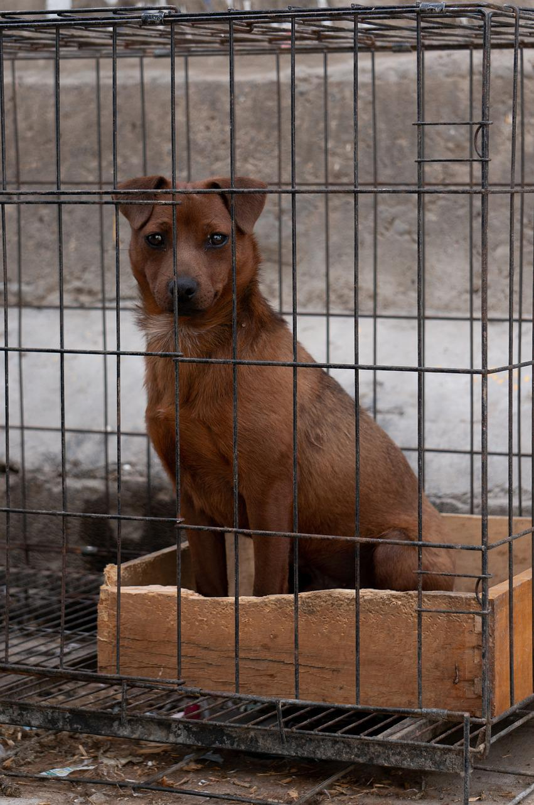
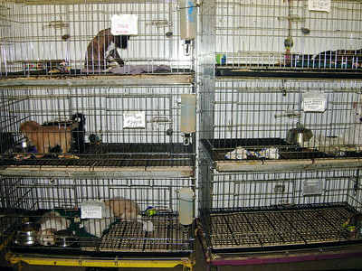
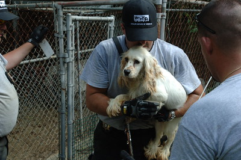

What is a Puppy Mill?
Puppy mills are dog-breeding facilities focused solely on profit. They sell thousands of puppies each year through ads, online stores, and to pet stores around the country. The unsanitary and unsafe conditions for the dogs, as well as the rampant inbreeding, leads to medical problems that fall entirely on the families of these dogs to pay for.
How Are These Legal?
Any laws regarding the care of animals being used for commercial resale are enforced by the United States Department of Agriculture. However, there are several loopholes in those laws that allow some puppy mills to operate even without an official license. Even if a facility requires a license, those regulations aren’t properly enforced, either. Some licenced breeders get away with repeated violations for the care conditions of their animal and are allowed to renew their license again and again.
What Can I Do To Help?
Like all large-scale problems, it can’t be fixed with one simple action. The average citizen can help the fight to end puppy mills through smaller acts.
For example, instead of buying a puppy at a pet store, try visiting your local animal shelter instead. The dogs at animal shelters are much better cared for, and the main goal of the staff is to find them a good future home. You’ll know their personality and any health problems they might have right off the bat, making for an easier time finding the animal that is perfect for you. When you adopt from a shelter instead of buying from a pet store, that takes away money from a puppy mill and help eventually drive them out of business. As well as that, you’ll be saving the life of a rescue dog, as thousands of dogs have to be put down each year due to overcrowded shelters.
You can also spread the word about puppy mills and create more awareness for the horrors they cause. Each customer you take away from a puppy mill sends that facility closer and closer to being shut down. And when the time comes, be sure to support legislation that regulates puppy mills much more strictly.
Resources
These links will have more information on how puppy mills and how to fight back against them. The information on this website was found on these pages.